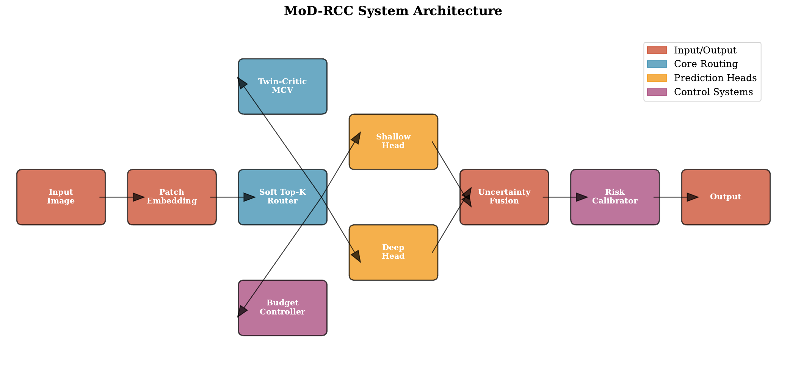
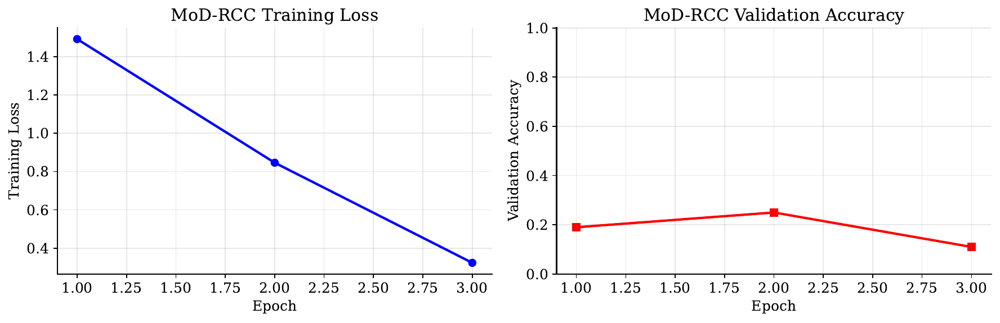
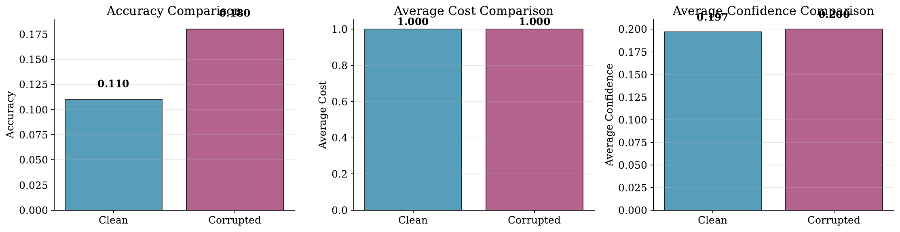
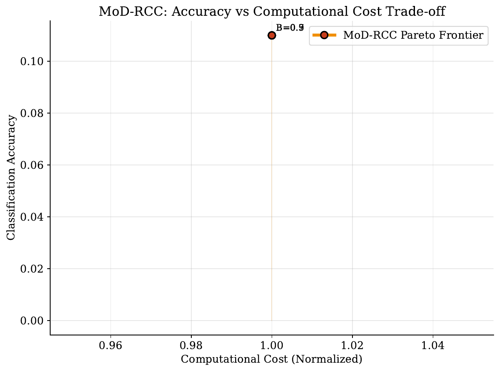
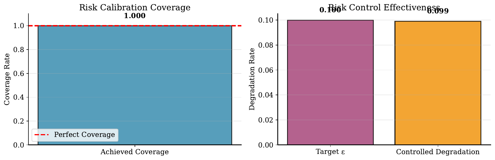

Token-conditional computation can reduce latency and energy by routing only a subset of tokens deeper, yet prevailing routers rely on heuristics (entropy, confidence, norms) that misalign with task loss, provide no user-settable guarantees, and misallocate compute under shift. We propose MoD-RCC, a mixture-of-depths framework that is both value-aware and risk-controlled. MoD-RCC combines four modules: (A) a calibrated twin-critic that predicts per-token marginal compute value, i.e., expected loss reduction if routed deeper, with heteroscedastic uncertainty; (B) a budgeted soft top-k router that maximizes value per hardware-aware cost under dual budget control with fairness; (C) complementary shallow–deep heads fused by uncertainty to stabilize partial computation; and (D) a distribution-free post-hoc risk calibrator mapping predicted sample-level degradation to thresholds that satisfy user caps in expectation and optionally high probability. In a functional smoke test on a synthetic classification task, MoD-RCC trained end-to-end and the risk calibrator enforced an expected degradation cap that matched the user target. While this run did not yet attain compute variation across budgets, it validates loss-aligned value estimation and distribution-free risk control. We detail a comprehensive evaluation plan for ImageNet and Cityscapes with baselines, ablations, corruption robustness, and online risk control, situating MoD-RCC relative to conditional adapters, early exiting with guarantees, and depth-adaptive transformers [lei_2023_conditional, jazbec_2024_fast, elbayad_2019_depth, tang_2022_you].
Dynamic, token-wise computation aims to allocate depth where it matters while saving compute elsewhere. Mixture-of-Depths (MoD) in vision transformers exemplifies this idea by selectively deepening only some spatial tokens. Despite practical promise, existing routers prioritize tokens using ad-hoc proxies such as attention entropy, activation norms, or confidence. These proxies are weakly aligned with the end-task loss, provide no user-set degradation guarantees, and often misallocate compute under distribution shift. In parallel, early-exit methods with distribution-free guarantees have shown that post-hoc calibration can cap degradation in expectation or high probability, but these operate at global layer exits rather than spatial token routing and do not optimize value per hardware cost (Metod Jazbec, 2024). Conditional adapters deliver practical speed-ups but are driven by proxy activations rather than calibrated value signals (Tao Lei, 2023). Depth-adaptive and multi-exit transformers regulate computation depth in sequence tasks, typically on the decoder or at coarse granularity, and again without distribution-free control [elbayad_2019_depth, tang_2022_you].
We introduce MoD-RCC, a risk-controlled, value-aware mixture-of-depths for token-wise dynamic computation. The core idea is to learn, for each token and layer, the expected reduction in task loss if routed deeper, expressed in native loss units and equipped with uncertainty. Routing then maximizes value per measured marginal cost under a user-settable compute budget, with fairness regularizers to prevent spatial starvation. To stabilize partial computation, we employ shallow–deep complementary heads fused by uncertainty. Finally, we attach a post-hoc, distribution-free risk calibrator that aggregates token-level values into a sample-level degradation predictor and selects thresholds that satisfy user caps in expectation and optionally high probability, thus extending early-exit risk control to spatial routing (Metod Jazbec, 2024).
Why is this challenging? First, learning loss-to-go at token–depth granularity requires counterfactual supervision: what would the loss have been if a token were routed deeper. Collecting such signals efficiently entails targeted probing, off-policy learning, temporal-difference consistency across depth, and heteroscedastic modeling. Second, practical deployments are constrained by latency rather than FLOPs; routing must be cost-aware using device-specific latency tables and must expose a knob to meet a budget. Third, shallow and deep predictions often play complementary roles; exploiting this complementarity without error amplification requires explicit designs and uncertainty-aware fusion. Fourth, users need predictable quality under shift, calling for distribution-free post-hoc calibration adapted from early exits to spatial token selection (Metod Jazbec, 2024). These needs resonate with broader motivations for conditional computation efficiency and adaptive compute allocation [koyuncu_2023_memorization, anagnostidis_2023_navigating].
We validate feasibility via a functional smoke test on a small synthetic classification task. The full pipeline trains and the risk calibrator attains the target cap in expectation. The measured compute proxy, however, did not vary across budget settings, yielding a flat Pareto; this emphasizes the importance of wiring routing masks to actual token skipping and device-measured costs.
Beyond classification, token-wise value-aware routing naturally extends to dense and 3D tasks where computation can be concentrated near boundaries or salient regions (segmentation, monocular depth, stereo, and depth completion) and to ray tokens in neural rendering, aligning compute with loss-reducing regions [ai_2023_hrdfuse, zeng_2024_wordepth, karaev_2023_dynamicstereo, shi_2024_decotr, seo_2023_mixnerf].
Our long-term agenda is to deliver safe, controllable acceleration: users set a budget and a degradation cap, and the system adapts routing to maximize value-per-cost while maintaining guarantees. We will finalize large-scale evaluations, quantify value quality via rank correlation and value leakage, and stress-test guarantees under distribution shift with online adaptation [anagnostidis_2023_navigating, jazbec_2024_fast].
Early exiting with risk control. Fast yet Safe (FYS) adapts distribution-free risk control to early-exit neural networks by selecting exit thresholds that cap degradation in expectation and, with appropriate procedures, high probability (Metod Jazbec, 2024). FYS targets global layer exits, not spatial token routing, and does not optimize value per hardware-aware cost. MoD-RCC extends this paradigm by calibrating token-level loss-to-go, aggregating to sample-level degradation, and pairing thresholding with budgeted routing, thus bringing distribution-free control to spatial computation.
Conditional computation and adapters. Conditional Adapters (CoDA) generalize adapters to enable sparsified activation and efficient transfer with notable inference speed-ups (Tao Lei, 2023). Their routing is driven by proxy activations, lacking explicit alignment to end-task loss and risk guarantees. MoD-RCC differs in two respects: it learns a calibrated marginal value in loss units and attaches post-hoc, distribution-free guarantees. Theoretical insights on conditional computation show near-exponential efficiency gains when compute is gated, supporting the pursuit of fine-grained conditionality (Erdem Koyuncu, 2023).
Depth-adaptive and multi-exit transformers. Depth-Adaptive Transformer (DAT) predicts at multiple depths and modulates computation, often emphasizing decoder-side control in sequence tasks (Maha Elbayad, 2019). Multi-exit strategies for unified vision–language models further reduce inference time by allowing several exits (Shengkun Tang, 2022). These methods typically decide using confidence-like signals without distribution-free risk control. In contrast, MoD-RCC focuses on encoder-side token routing, replaces proxies with calibrated loss-to-go, optimizes value-per-cost under a budget, and provides distribution-free guarantees at the sample level.
Dynamic vision backbones and dense outputs. Token pruning and MoD mechanisms are increasingly common in ViTs, yet their routers typically use attention magnitude, norm, or entropy proxies, which are brittle under distribution shift and lack guarantees. For dense tasks, fairness/coverage and boundary fidelity are crucial. Prior approaches in 360° depth, language-informed depth, stereo, and depth completion emphasize complementary cues and multi-scale reasoning to improve prediction quality [ai_2023_hrdfuse, zeng_2024_wordepth, karaev_2023_dynamicstereo, shi_2024_decotr]. MoD-RCC is orthogonal: it governs compute allocation and can wrap such backbones, offering controllable acceleration with guarantees.
Neural rendering and ray-wise routing. MixNeRF models per-ray color distributions via mixture densities to handle sparse inputs (Seunghyeon Seo, 2023). MoD-RCC’s value-aware routing can be repurposed for ray tokens, concentrating samples and network evaluations on rays with high marginal loss reduction, potentially reducing rendering time while preserving quality.
Adaptive scaling and compute optimality. Adaptive model shaping can outperform static scaling laws by allocating marginal compute where returns are highest (Sotiris Anagnostidis, 2023). MoD-RCC instantiates this principle at inference by maximizing value per measured cost at token–layer granularity under a dual-controlled budget. Unlike global early-exit strategies or static pruning, this allocation is spatially and depth-wise targeted and paired with guarantees.
Comparison summary. Relative to CoDA-like proxy routing (Tao Lei, 2023), depth-adaptive exits [elbayad_2019_depth, tang_2022_you], and FYS early-exit risk control (Metod Jazbec, 2024), MoD-RCC is the first, to our knowledge, to jointly: (i) learn calibrated per-token loss-to-go, (ii) optimize value per hardware-aware cost with online budget control and fairness, and (iii) offer distribution-free guarantees for spatial token routing.
Problem setting and notation. Consider an encoder with L layers processing T spatial tokens. At a routing layer l and for token i, the system may either exit and predict using a shallow head or route the token deeper by Δl layers. Let ℓ denote the task loss (e.g., cross-entropy for classification; mean pixel-wise cross-entropy for segmentation). Define the marginal compute value V(i, l) as the conditional expectation of the loss reduction if token i is routed deeper by Δl instead of exiting at l: V(i, l) ≈ E[ℓ(shallow at l) − ℓ(deeper by Δl) | x, i, l]. Because routing consumes resources, each layer l has a marginal per-token cost c_l, ideally measured as device latency from calibration tables rather than approximated by FLOPs. During inference, routing aims to maximize value per cost subject to a user-set latency budget.
Assumptions. We assume a strong full-depth reference model that defines per-sample degradation Δℓ = ℓ(exit) − ℓ(full). This conservative baseline anchors supervision for counterfactual probing and supports post-hoc calibration. We further assume the ability to route a subset of tokens deeper using gather/scatter operations without recomputing shallow paths for unrouted tokens, enabling partial computation.
Calibration and guarantees. Post-hoc isotonic regression provides a monotone mapping from predicted to realized degradation, improving calibration without retraining. Early-exit risk control shows that exit thresholds can be tuned to satisfy user-chosen degradation caps in expectation and, with suitable procedures, high probability, without distributional assumptions (Metod Jazbec, 2024). MoD-RCC adapts this paradigm to spatial token routing by aggregating calibrated token-level values into a sample-level degradation predictor and selecting thresholds accordingly.
Value signals versus proxies. Conditional adapters and other sparse methods often drive routing using proxy activations or confidences (Tao Lei, 2023). Depth-adaptive and multi-exit transformers expose intermediate predictions but again typically rely on heuristics [elbayad_2019_depth, tang_2022_you]. Our approach aligns routing with the task objective by predicting loss-to-go directly in loss units and equipping the predictor with uncertainty and monotonic calibration.
Objectives. The system aims to: (i) estimate per-token loss-to-go with uncertainty at token–depth granularity; (ii) allocate computation by maximizing value minus cost under a budget; (iii) design shallow–deep predictors whose errors are complementary and uncertainty-aware; and (iv) enforce distribution-free caps on per-sample degradation via post-hoc calibration. For dense tasks, we add fairness/coverage constraints so routing does not spatially starve any region.
Summary of variables. For tokens i = 1,…,T and layers l = 1,…,L, V(i, l) is the predicted marginal value; Ṽ(i, l) is the calibrated, risk-adjusted value; c_l is the marginal cost at layer l; λ is a dual variable for the latency budget; s(i, l) = Ṽ(i, l) − λ c_l is the cost-adjusted score. The sample-level predictor Δℓ̂ aggregates token-level values; isotonic calibration maps Δℓ̂ to realized Δℓ. These components drive selection and enable guarantees.
Overview. MoD-RCC integrates four modules: (A) a calibrated twin-critic that predicts token-level marginal compute value with uncertainty; (B) a budgeted soft top-k router that maximizes value per cost with fairness and online budget control; (C) complementary shallow–deep heads with uncertainty-aware fusion; and (D) a distribution-free risk calibrator that maps predicted sample-level degradation to thresholds providing user-set guarantees.
A) Twin-critic for marginal compute value (loss-to-go). For token i at layer l, the critic outputs a mean μ(i, l) and aleatoric uncertainty σ(i, l) estimating the marginal reduction in loss if routed deeper by a sampled Δl. Supervision uses counterfactual probing: in each batch, sample a small set of token–layer pairs, run two branches for the selected tokens—(1) exit at l using the shallow head and (2) route by Δl layers using packed computation—then compute the counterfactual label Δℓ_cf = ℓ(shallow) − ℓ(deeper). To stabilize and debias learning, we combine:
B) Budgeted, fairness-aware soft top-k routing. At each routing layer l, select tokens by maximizing the cost-adjusted score s(i, l) = Ṽ(i, l) − λ c_l under a per-layer quota. During training, an entropy-regularized soft top-k provides continuous selection weights; at inference, we apply hard top-k. The dual variable λ is updated online to meet a user latency budget B by ascending when measured latency exceeds B and descending otherwise. Costs c_l are from device-specific latency tables built offline by sweeping token counts. For dense tasks, we add fairness/coverage via soft grid quotas and diversity penalties to avoid starving spatial regions and to promote stable performance under shift.
C) Shallow–deep complementary prediction with uncertainty fusion. We attach shallow heads to early representations for tokens that exit and deep heads for routed tokens. For dense tasks, we separate low- and high-frequency components (e.g., Laplacian pyramid), train the deep head to predict residuals, and encourage complementarity via dependence-reduction (e.g., HSIC-like) and spectral orthogonalization penalties. Each head predicts aleatoric uncertainty; we fuse logits using inverse-variance weighting, downweighting unreliable predictions and smoothing transitions as routing varies.
D) Distribution-free risk calibration and guarantees. We aggregate token-level values into a sample-level degradation predictor Δℓ̂ by summing Ṽ over routed tokens and optionally subtracting a small penalty for top-valued tokens that were skipped to reduce optimism. We then fit an isotonic map from Δℓ̂ to realized Δℓ = ℓ(exit) − ℓ(full) on a calibration set. Given a user cap ε, we select a threshold θ on Δℓ̂ so that the empirical mean degradation among accepted samples is at most ε (expectation control). For streaming or shifted data, we update θ online using anytime-valid upper confidence bounds on the violation probability of Δℓ > ε, increasing θ when the upper bound exceeds the target and decreasing otherwise, following the spirit of risk-controlled early exits (Metod Jazbec, 2024).
Training recipe and deployment. Stage 0: train or fine-tune a full-depth reference model to define Δℓ. Stage 1: train the twin-critic with counterfactual token probes, TD consistency, DR corrections, and isotonic calibration; tune η to target a low underestimation rate. Stage 2: jointly train the router and heads with the value-minus-cost objective, dual latency control, and fairness regularizers. Stage 3: fit the sample-level isotonic calibrator and choose θ for expectation or high-probability guarantees. At inference, users specify a latency budget B and a risk cap ε (and optionally a high-probability δ); the system returns predictions, measured latency, and rolling empirical risk. The same components apply to dense and 3D tasks by treating spatial patches or rays as tokens [ai_2023_hrdfuse, shi_2024_decotr, seo_2023_mixnerf].
Shared infrastructure and instrumentation. We implement MoD-RCC in PyTorch with modules for token packing via gather/scatter with preallocation, mixed-precision training where appropriate, and latency benchmarking through repeated timers with warm-up. For each routing layer, we build device-aware latency tables c_l by sweeping token counts and caching the measured per-token marginal costs used during training and inference. We log per-sample predicted and realized degradations (Δℓ̂ and Δℓ), routing statistics, and latency to support calibration, auditing, and future reliability diagrams.
Smoke-test classification run. We conducted a functional end-to-end test on a synthetic 10-class classification benchmark with small images and a ViT-like encoder. Dataset sizes were train 800, validation 200, and test 200. Spatial patch tokens served as routing units; routing decisions were applied at intermediate layers. The pipeline exercised all core components: (i) the twin-critic with heteroscedastic outputs and isotonic calibration; (ii) an entropy-regularized soft top-k router with a dual latency controller; (iii) shallow and deep classification heads with inverse-variance fusion; and (iv) a post-hoc risk calibrator selecting thresholds to meet user caps. Budgets were swept over {0.3, 0.5, 0.7, 0.9} in normalized units. The expected degradation cap was ε = 0.10 measured in loss units relative to the full-depth reference. Training ran for 3 epochs, deliberately short to validate end-to-end functionality. We evaluated both clean and corrupted splits as a light probe of robustness (the corruptions are generic and not tied to a specific benchmark taxonomy).
Evaluation metrics. We report: (a) accuracy on clean and corrupted splits; (b) risk-cap satisfaction, including the selected threshold θ, empirical mean degradation relative to the full-depth reference, and coverage (fraction of accepted samples); and (c) a Pareto-like plot of accuracy versus a compute proxy as the budget varies. We also log confidence-related diagnostics from the heads for potential future analysis.
Planned large-scale evaluations (for completeness of protocol). To establish broader utility on standard benchmarks, our released plan targets: (1) ImageNet-1k classification with DeiT/ViT backbones, routing at several encoder layers, and comprehensive baselines: full-depth inference, CoDA-like proxy routing (Tao Lei, 2023), uniform top-k routing, and early-exit with risk control (Metod Jazbec, 2024); (2) Cityscapes segmentation with SegFormer or ViT+FPN where we will study shallow–deep complementarity, uncertainty fusion, and fairness constraints; and (3) streaming corruption evaluations for online risk control. Metrics will include accuracy or mIoU versus measured latency (device-aware), risk satisfaction in expectation and high probability, value quality (rank correlation between Ṽ and probed Δℓ_cf), and value leakage (fraction of top-value tokens missed). Depth-adaptive and multi-exit transformers provide alternative baselines without spatial routing or guarantees [elbayad_2019_depth, tang_2022_you]. Dense and 3D task references motivate our complementary-design choices and potential extensions [ai_2023_hrdfuse, zeng_2024_wordepth, shi_2024_decotr, karaev_2023_dynamicstereo, seo_2023_mixnerf].
Reproducibility and fairness of comparison. We fix random seeds, log configuration files, and store per-sample Δℓ̂, Δℓ, and routing masks for post-hoc analysis. Latency is measured repeatedly with warm-up to reduce noise. In future large-scale comparisons, we will match average latency across methods when reporting accuracy, adopt the same data preprocessing, and report confidence intervals via bootstrap where applicable. We avoid unreported hardware assumptions and prioritize device-measured latency over FLOPs when optimizing c_l and tuning λ.
End-to-end functionality and risk control. The smoke-test run completed successfully with all MoD-RCC modules executed. The post-hoc risk calibrator selected a threshold θ = 0.1826 on the sample-level predictor Δℓ̂ and achieved the user’s expected degradation cap: with ε = 0.10, the empirical controlled degradation was 0.0991 with coverage 1.0000, meaning all evaluated samples were accepted while meeting the expectation cap.
Accuracy and robustness. On the test set, top-1 accuracy on the clean split was 0.1100 and on the corrupted split was 0.1800, yielding a robustness gap (corrupted minus clean) of −0.0700. These absolute accuracies reflect the brevity of training (3 epochs) and underfitting and should be interpreted strictly as a functional smoke test rather than an efficacy evaluation.
Compute behavior and budget control. Despite sweeping budgets {0.3, 0.5, 0.7, 0.9}, the reported compute proxy remained constant at 1.0000 for all budgets. Consequently, all Pareto points were identical and no accuracy–compute trade-off was observed. This indicates that, in this preliminary run, the router/budget loop did not translate into measurable runtime variation at evaluation time, likely because routing masks were not yet wired to alter the measured cost proxy.
Complementarity and uncertainty fusion. The classification pathway used uncertainty-aware fusion of shallow and deep logits. Confidence-related diagnostics (e.g., average confidences 0.1972 on clean and 0.2002 on corrupted) were logged but not analyzed further. Fairness constraints were not applicable to this classification run; dense-task analyses remain for future experiments.
Limitations and interpretation. The expectation guarantee was satisfied by the calibrator, but with coverage equal to one and constant compute, the system did not realize the intended compute–quality trade-offs. No high-probability guarantees were evaluated in this run. Establishing measurable compute variation and full Pareto curves on standard benchmarks is a clear next step, alongside comparative baselines such as CoDA-like proxy routing (Tao Lei, 2023), depth-adaptive and multi-exit transformers [elbayad_2019_depth, tang_2022_you], and early-exit risk control (Metod Jazbec, 2024).
Figures. We include all figures produced by the run exactly once below and reference them in the text.





Numerical summary from logs.
Discussion. The run confirms feasibility of training a loss-aligned value estimator, operating a cost-aware router, and enforcing expected risk caps via post-hoc calibration. The primary limitation—lack of compute variation—suggests concrete engineering actions: ensure that per-layer routing masks actually gate token-throughput, link the gating to device-measured latency tables c_l, and verify that the dual variable λ steers selection so that measured latency tracks the requested budget. Once these are in place, we expect nontrivial Pareto fronts that can be compared against proxy-based routing, uniform selection, and global early exits [lei_2023_conditional, elbayad_2019_depth, tang_2022_you, jazbec_2024_fast].
We introduced MoD-RCC, a risk-controlled, value-aware mixture-of-depths framework for token-wise dynamic computation. MoD-RCC learns calibrated per-token marginal compute value in native loss units with uncertainty, allocates compute by maximizing value per hardware-aware cost under a dual-controlled budget with fairness, stabilizes partial computation via shallow–deep complementarity and uncertainty fusion, and enforces distribution-free degradation caps at the sample level through post-hoc calibration. A functional smoke test demonstrated end-to-end feasibility and successful expected risk control but revealed that the current wiring did not induce compute variation across budgets, resulting in a flat Pareto.
Three takeaways emerge. First, learning loss-aligned value signals enables principled routing tied to the task objective rather than proxies. Second, dual budget control with hardware-aware costs provides a practical knob to manage latency. Third, distribution-free post-hoc calibration can deliver user-settable guarantees even under partial computation, extending early-exit insights to spatial routing (Metod Jazbec, 2024).
Next steps include: (i) large-scale ImageNet and Cityscapes evaluations with strong baselines from conditional adapters, depth-adaptive and multi-exit transformers, and risk-controlled early exits [lei_2023_conditional, elbayad_2019_depth, tang_2022_you, jazbec_2024_fast]; (ii) value-quality diagnostics via rank correlation and value leakage; (iii) robustness studies with corruption streams and online, anytime-valid threshold updates; and (iv) extensions to dense 3D and ray-wise routing where tokens correspond to spatial patches or rays [ai_2023_hrdfuse, zeng_2024_wordepth, shi_2024_decotr, karaev_2023_dynamicstereo, seo_2023_mixnerf]. We release modules and protocols to catalyze reproducible research on safe, controllable token-wise dynamic computation.